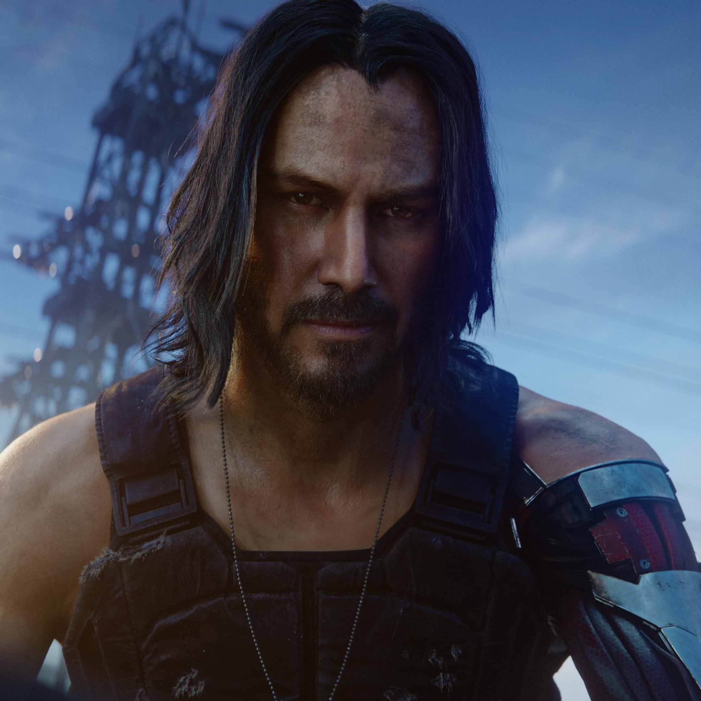

TIME TO RELEASE
219 DAYS

Wake the fuck Up Samurai, we have a city to burn
TIME TO RELEASE
219 DAYS
Wake the fuck Up Samurai, we have a city to burn
16.04.2020
CD Projekt S.A. is a Polish video game developer, publisher and distributor based in Warsaw, founded in May 1994 by Marcin Iwiński and Michał Kiciński. Iwiński and Kiciński were video game retailers before they founded the company, which initially acted as a distributor of foreign video games for the domestic market. The department responsible for developing original games, CD Projekt Red, best known for The Witcher series, was formed in 2002. In 2008, CD Projekt launched the digital distribution service GOG.com (originally as Good Old Games).
The company began by translating major Western video-game releases into Polish, collaborating with Interplay Entertainment for two Baldur's Gate games. CD Projekt was working on the PC version of Baldur's Gate: Dark Alliance when Interplay experienced financial difficulties. The game was cancelled and the company decided to reuse the code for their own video game. It became The Witcher, a video game based on the works of Andrzej Sapkowski.
Cyberpunk 2077 is an upcoming role-playing game developed by CD Projekt Red, the same people behind The Witcher series. Recently, the Cyberpunk 2077 Night City Wire event took place, which revealed a lot of new details about the game. This included a story trailer, a new gameplay sequence and a new braindance mode which is somewhat similar to Detroit's investigation mode, where you can fast forward and go back in scenes.
Cyberpunk 2077 on PC is a beauty everyone should appreciate. The game looks phenomenal, with the minor details to the environment's physics, the god rays, lighting and reflections all at another level. The vast open-world of the game is full of variety, and the sheer beauty of the open world will make players gaze upon scenic moments with awe.
Cyberpunk 2077 entered pre-production as soon as developer CD Project Red had finished The Witcher 3: Wild Hunt - Blood and Wine. Around this time, approximately fifty staff members were involved. They later devoted a team larger than that of The Witcher 3: Wild Hunt, and after it was released, began upgrading their RED engine 3 to complement Cyberpunk 2077. The team learned early on how aspects like stream processing and global illumination would function without disturbing the central processing unit.
MORE